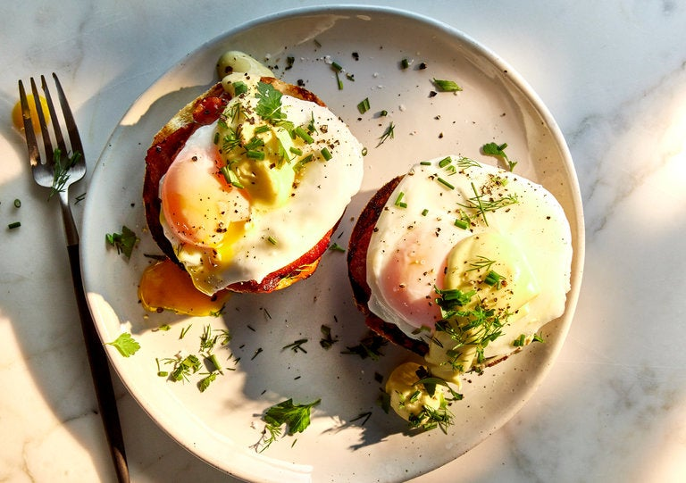

Eggs Benedict

Description
Decadence is what makes eggs Benedict a star of the brunch table. To get there, order and timing are key. First, you'll want to
make your hollandaise. While intimidating in theory, the process is a lot like making mayonnaise. If the emulsion is stable, it won't
break, even when held at room temperature. Next, poach your eggs, and toast the English muffins while you crisp up the Canadian bacon.
From there, it's as simple as stacking your ingredients and sprinkling them with herbs, salt and pepper. Once you've mastered this basic
version, you can explore its variations: Add sliced avocado, or even swap in some smoked salmon (eggs Hemingway) or wilted greens for the
Canadian bacon (eggs Florentine).
Ingredients
- 3/4 cup (1½ sticks) unsalted butter
- 3 large egg yolks
- 1 1/2 teaspoons fresh lemon juice, plus more to taste
- 1/4 teaspoon cayenne or hot paprika, plus more to taste
- Kosher salt and freshly ground pepper
Steps
- Make the hollandaise: Melt butter in a small pot over medium heat until it's foamy but not yet beginning to brown, 3 to 4 minutes.
- Place egg yolks and 2 teaspoons water in a blender. Start blending, and, working very slowly, add the hot, melted butter until it's all
incorporated. (If it starts to get too thick to blend, add ½ teaspoon of water.) Add lemon juice and cayenne, though feel free to adjust
the amounts to taste, and season with salt and pepper. Transfer the hollandaise to a small bowl, and place plastic wrap directly on the
surface so it doesn't form a skin. Set aside. (It will keep at room temperature while you work.)
- Poach the eggs: Fill a medium pot with 3 inches of water. Add vinegar, season with salt and bring to a simmer. (Look for just a few
bubbles; it should never boil.) Using the handle of a spoon or spatula, stir the water with a clockwise motion. Gently crack an egg into
the center of the pot, letting the water swirl around it and allowing the white to envelop the yolk. Repeat with remaining eggs — you
could probably do up to four at a time. Check the eggs after 4 minutes: Use a slotted spoon to lift an egg out of the water, and feel the
white for firmness. If it's not quite done, slide it back in for another minute or so. Let cook until the whites are just set, but the
yolks are still completely runny, 4 to 5 minutes. Once eggs are perfectly poached, remove from the water, and let drain on a plate lined
with paper towels or a clean kitchen towel. Set eggs aside.
- Using a toaster, toaster oven or regular oven, toast the English muffins until crisp and golden brown. Don't be afraid to toast them
thoroughly: They'll be covered in hollandaise and poached eggs, and will need to be sturdy.
- Cook Canadian bacon or ham (or bacon) in a medium skillet over medium–high heat until golden brown and just crisp at the edges, about 6 minutes.
- Assemble the Benedict: Place eight halves of English muffin on a plate and butter them generously. Top each with a slice of Canadian bacon,
ham or bacon, then a poached egg. Spoon hollandaise sauce over and sprinkle with chives, dill, flaky sea salt and black pepper.